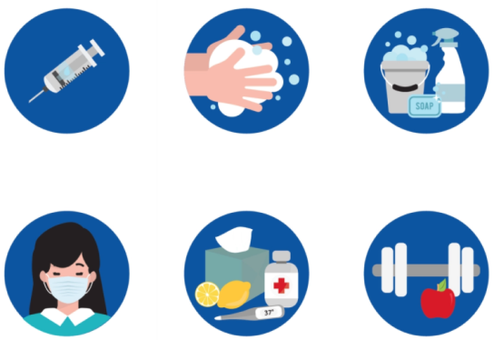
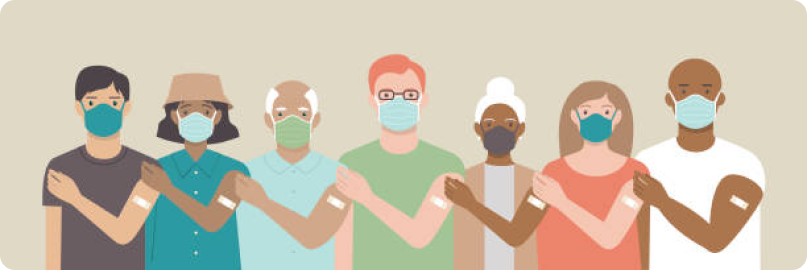
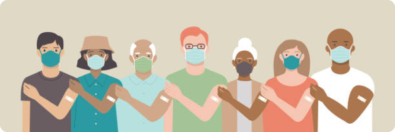

Как да се предпазим от COVID - 19

Мерки за предотвратяване на разпространението на COVID-19:
- Стойте на безопасно разстояние от другите (поне 1 метър), дори и да не изглеждат болни. Носете маска на обществени места, особено на закрито, когато не е възможна физическа дистанция.
- Почиствайте често ръцете си. Използвайте сапун и вода или кърпичка на алкохолна основа.
- При кихане или кашляне покривайте устата и носа си със свивката на лакътя или със салфетка. Останете вкъщи, ако се чувствате зле.
- Ако имате температура, кашлица и затруднено дишане, потърсете лекарска помощ. Обадете се предварително, за да може доставчикът на здравни грижи да ви насочи бързо към подходящото здравно заведение. Това ви предпазва и предотвратява разпространението на вируси и други инфекции.
Маски
Правилно поставените маски могат да помогнат за предотвратяване на разпространението на вируса от човека, който носи маската, към други лица. Самите маски не предпазват от COVID-19 и трябва да се комбинират с физическа дистанция и хигиена на ръцете. Спазвайте съветите на местните здравни власти.
Ваксини
 Ваксините се използват в целия свят като изключително ефективно средство за предпазване на хората от заразяване с инфекциозни заболявания. Те помагат и за да се предотврати разпространението на заболявания в обществото. Ваксините действат, като „обучават“ имунната система (естествените защитни сили на организма) да се защитава срещу дадено заболяване. Насочени са основно срещу заболявания, причинени от вируси или бактерии.

Ваксините се използват в целия свят като изключително ефективно средство за предпазване на хората от заразяване с инфекциозни заболявания. Те помагат и за да се предотврати разпространението на заболявания в обществото. Ваксините действат, като „обучават“ имунната система (естествените защитни сили на организма) да се защитава срещу дадено заболяване. Насочени са основно срещу заболявания, причинени от вируси или бактерии.
